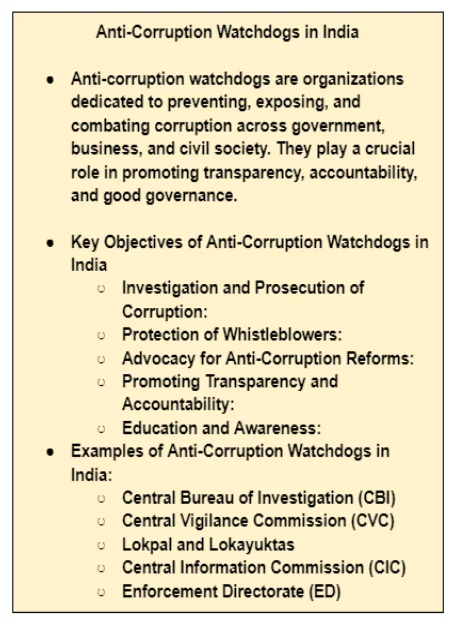
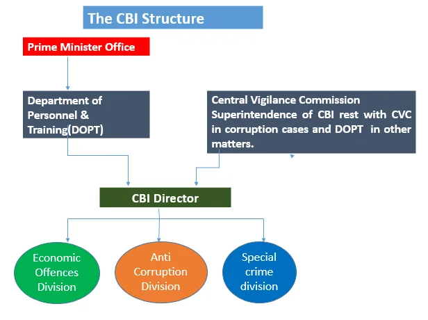
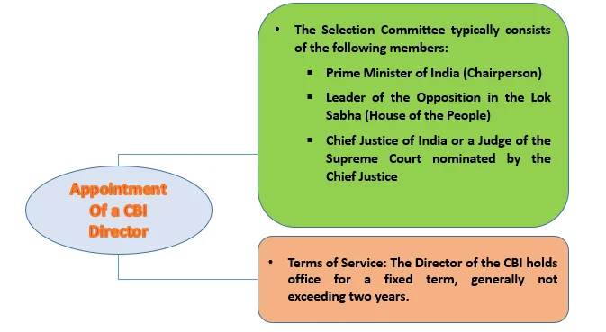

The Central Bureau of Investigation (CBI) is India’s premier investigative agency, tasked with probing high-profile corruption and economic offenses. Established in 1963, the CBI plays a vital role in promoting accountability and integrity within government and public sectors. With a focus on cooperation between various law enforcement bodies, the CBI aims to enhance transparency and uphold justice.
The Central Bureau of Investigation (CBI): An Overview
Historical Overview and Legal Framework of the Central Bureau of Investigation (CBI)
- Origin of Central Bureau of Investigation (CBI): The CBI traces its origins to the Special Police Establishment established in 1941 by the Government of India.
- Expansion of Special Police Establishment: In 1946, the Delhi Special Police Establishment Act was enacted, transferring its supervision to the Home Department and expanding its scope to cover all government departments.
- Establishment of CBI: The Central Bureau of Investigation (CBI) was formally established in 1963 through a resolution by the Ministry of Home Affairs, Government of India. The Delhi Special Police Establishment was merged with the CBI and became one of its divisions. Later it was transferred to the Ministry of Personnel, Pension & Public Grievances, Government of India.
- Legal Authority of CBI: The CBI is not a statutory body but derives its authority from the Delhi Special Police Establishment Act, 1946. It serves as the primary investigating agency of the Central Government and plays a crucial role in preventing corruption and ensuring administrative integrity. The CBI also provides assistance to the Central Vigilance Commission and Lokpal.
- Jurisdiction of CBI: The Delhi Special Police Establishment Act (1946) mandates that the CBI can exercise its powers and jurisdiction in any area within a state only with the consent of the respective State Government. In other words, the CBI’s jurisdiction can be extended to the states solely with the consent of the concerned State Government.

Motto, Mission, and Vision of the Central Bureau of Investigation (CBI)
- Motto: Industry, Impartiality, and Integrity
- Mission: To uphold the Constitution of India and the law of the land through in-depth investigation and successful prosecution of offenses. To provide leadership and direction to police forces. To act as the nodal agency for enhancing inter-state and international cooperation in law enforcement.
- Vision: The CBI’s vision is based on its motto, mission, and the need for professionalism, transparency, adaptability to change, and the use of science and technology in its operations.
- Focus Areas: Combating Corruption and Curbing Economic and Violent Crimes.
- Fighting Cyber Crime: The agency is committed to addressing cyber and high technology crimes, reflecting the evolving nature of criminal activities.
- Supporting Law Enforcement Agencies: The CBI provides support to state police organizations and law enforcement agencies, particularly in matters related to inquiries and investigations. The CBI plays a leadership role in combating both national and transnational organized crime.
- Upholding Human Rights: The agency is committed to upholding human rights and protecting the environment, arts, antiques, and the heritage of India’s civilization.
Role and Responsibilities of the Central Bureau of Investigation (CBI)
Introduction to CBI: The Central Bureau of Investigation (CBI) is a premier investigative agency entrusted with the responsibility of probing high-profile cases of corruption, economic offenses, and special crimes that transcend state boundaries.
Responsibilities of CBI: The agency’s multifarious responsibilities encompass not only investigating offenses but also providing assistance to Central and State Vigilance Commissions, coordinating anti-corruption activities, and conducting international investigations.
Structure and Administration of the Central Bureau of Investigation (CBI)

Leadership Hierarchy:
- Leadership of the CBI: The CBI is led by a Director, who is the highest-ranking official in the organization.
- Support Structure: The Director is further supported by special directors and additional directors.
- Organizational Personnel: The organization includes a variety of personnel, such as joint directors, deputy inspector-generals, superintendents of police, and other ranks of police personnel.
Appointment:
- Selection Committee: The appointment of the CBI Director is made by a Selection Committee consisting of:
- Prime Minister of India (Chairperson)
- Leader of the Opposition in the Lok Sabha (member)
- Chief Justice of India or a Judge of the Supreme Court nominated by the Chief Justice (member)
- Selection Process for the CBI Director: The Selection Committee recommends a candidate for the CBI Director’s post to the President of India. On approval, the selected candidate becomes the CBI Director.

Removal:
The removal of the CBI Director is subject to certain conditions and is outlined in the CBI (Central Bureau of Investigation) Special Police Establishment Act, 1946:
- Terms of Service: The Director of the CBI holds office for a fixed term, generally not exceeding two years. This term can be extended in exceptional cases with the approval of the Selection Committee.
- Resignation: The Director can resign from the post by submitting a resignation letter to the President of India.
- Superannuation: The Director must retire upon reaching the age of superannuation, which is typically 60 years.
- Transfer or Removal: The Director can be transferred or removed from office before the completion of the term in certain circumstances including incapacity, conviction in a criminal case, and dismissal following a disciplinary inquiry.
- Protection from External Influence: The Director of the CBI is afforded some protection from external influence, ensuring the independence of the CBI. The CBI Director is not to be transferred or removed without the approval of the Selection Committee.
- Role of the Director: The Director of the CBI, who holds the rank of Inspector-General of Police in the Delhi Special Police Establishment, is responsible for the overall administration of the organization.
Supervision Changes and Tenure Extensions:
- Supervision Changes with CVC Act (2003): With the enactment of the Central Vigilance Commission (CVC) Act, 2003, the overall superintendence of the Delhi Special Police Establishment was transferred to the Central Government. However, investigations of offences under the Prevention of Corruption Act, 1988, are still under the superintendence of the Central Vigilance Commission.
- Extension of Director’s Tenure: The Delhi Special Police Establishment (Amendment) Act, 2021, allowed for the extension of the tenure of the Director of CBI.
- Under the Central Vigilance Commission Act, 2003, the Director has a fixed two-year tenure, which can now be extended for up to five years.
- Such extensions are granted annually, with a maximum of three extensions, and are subject to being in the public interest and recommended by the committee responsible for the initial appointment.
- Reasons for extensions must be recorded in writing.
- Limit on Extensions: No extensions are possible after completing a total of five years in the position, including the initial two-year appointment.
Impact of Lokpal and Lokayuktas Act (2013)
The Lokpal and Lokayuktas Act (2013) introduced changes to the composition of the CBI:
- Appointment: The Director is appointed by the Central Government based on the recommendation of a three-member committee (PM, LoP, and CJI/Nominee).
- Directorate of Prosecution: A Directorate of Prosecution was established, led by a Director responsible for conducting prosecutions under the Lokpal and Lokayuktas Act, 2013. It operates under the overall supervision and control of the Director of CBI. Appointment is made by the Central Government upon the recommendation of the CVC.
- Appointment of Senior Officers: Central Government appoints officers of the rank of SP and above based on the recommendation of a committee comprising the CVC (Chairperson), Vigilance Commissioners, Secretary of the Home Ministry, and Secretary of the Department of Personnel.
Conclusion
The CBI is crucial in combating corruption and ensuring good governance in India. Its structured leadership, legal authority, and collaborative approach help tackle complex crimes effectively. As the agency adapts to evolving challenges, it remains committed to its mission of integrity and impartiality in law enforcement.